30球団と120の傘下球団、お金と契約の規則
基準日 2026年11月15日
Industry Research / MLB とマイナーリーグ
MLBの下に5段階のマイナーリーグがあり、上の段ほど試合数が多く選手の年齢が高い。ヤンキースは各段に1球団ずつ傘下球団を持つ。
リーグ名と所属は MiLB、試合数は Baseball America の資料、年齢は Baseball America の2026年4月の集計による。100101102103AAA の RailRiders は2027年から Highlanders に名称を変更する。4
MLBは1876年のナ・リーグ創設と1901年のア・リーグ創設を起点とする。マイナーリーグは1901年に統括団体を設立し、2021年にMLBの直轄体系へ移行した。
ポストシーズンの出場枠は2022年の協定で12球団になった。47
30球団はア・リーグとナ・リーグに15球団ずつ所属し、各リーグに東・中・西の3地区がある。ワールドシリーズの優勝回数はヤンキースの27回が最多である。586
ポストシーズンには各リーグの地区優勝3球団とワイルドカード3球団が進む。地区優勝の上位2球団は地区シリーズから出場し、残る4球団が3試合制のワイルドカードシリーズを戦う。58
地図: Esri（データは OpenStreetMap ほか）。位置は球場の所在地。
| 球団 | 地区 | 本拠地 | 創設年と移転歴 | 球場 | 開場 | 収容人数 | WS優勝 | 最後の優勝 | 2026年成績 | 春季キャンプ地 |
|---|---|---|---|---|---|---|---|---|---|---|
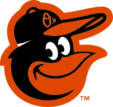 オリオールズBaltimore Orioles | ア東 | ボルチモア | 1901年。ミルウォーキー・ブルワーズ→セントルイス・ブラウンズ→1954年ボルチモア | Oriole Park | 1992 | 42,455 | 3 | 1983 | 79勝83敗 | サラソタ |
| レッドソックス Boston Red Sox | ア東 | ボストン | 1901年 | Fenway Park | 1912 | 37,755 | 9 | 2018 | 87勝75敗 | フォートマイヤーズ |
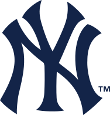 ヤンキースNew York Yankees | ア東 | ニューヨーク | 1901年。ボルチモア→1903年ニューヨーク | Yankee Stadium | 2009 | 46,537 | 27 | 2009 | 93勝68敗 | タンパ |
| レイズ Tampa Bay Rays | ア東 | セントピーターズバーグ | 1998年 | Tropicana Field | 1990 | 25,000 | 0 | — | 98勝64敗 | ポートシャーロット |
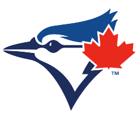 ブルージェイズToronto Blue Jays | ア東 | トロント | 1977年 | Rogers Centre | 1989 | 39,150 | 2 | 1993 | 79勝83敗 | ダニーデン |
| ホワイトソックス Chicago White Sox | ア中 | シカゴ | 1901年 | Rate Field | 1991 | 40,615 | 3 | 2005 | 84勝78敗 | グレンデール |
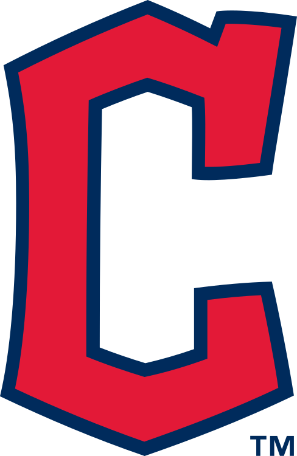 ガーディアンズCleveland Guardians | ア中 | クリーブランド | 1901年。2022年にインディアンスから改名 | Progressive Field | 1994 | 34,820 | 2 | 1948 | 85勝77敗 | グッドイヤー |
| タイガース Detroit Tigers | ア中 | デトロイト | 1901年 | Comerica Park | 2000 | 41,083 | 4 | 1984 | 76勝86敗 | レイクランド |
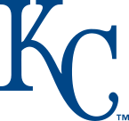 ロイヤルズKansas City Royals | ア中 | カンザスシティ | 1969年 | Kauffman Stadium | 1973 | 37,903 | 2 | 2015 | 69勝93敗 | サプライズ |
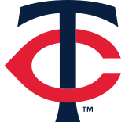 ツインズMinnesota Twins | ア中 | ミネアポリス | 1901年。ワシントン・セネターズ→1961年ミネソタ | Target Field | 2010 | 38,544 | 3 | 1991 | 77勝85敗 | フォートマイヤーズ |
| アスレチックス Athletics | ア西 | ウェストサクラメント | 1901年。フィラデルフィア→1955年カンザスシティ→1968年オークランド→2025年ウェストサクラメント（暫定）。ラスベガスの新球場は2028年予定 | Sutter Health Park | 2000 | 13,416 | 9 | 1989 | 64勝98敗 | メサ |
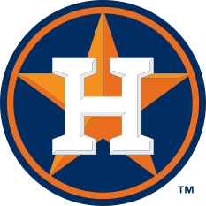 アストロズHouston Astros | ア西 | ヒューストン | 1962年（コルト45s）。2013年にナ・リーグから移籍 | Daikin Park | 2000 | 41,168 | 2 | 2022 | 81勝81敗 | ウェストパームビーチ |
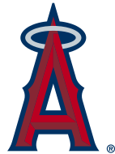 エンゼルスLos Angeles Angels | ア西 | アナハイム | 1961年 | Angel Stadium | 1966 | 45,517 | 1 | 2002 | 62勝100敗 | テンピ |
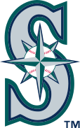 マリナーズSeattle Mariners | ア西 | シアトル | 1977年 | T-Mobile Park | 1999 | 47,929 | 0 | — | 76勝86敗 | ピオリア |
| レンジャーズ Texas Rangers | ア西 | アーリントン | 1961年。ワシントン・セネターズ（2代目）→1972年テキサス | Globe Life Field | 2020 | 40,300 | 1 | 2023 | 80勝82敗 | サプライズ |
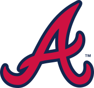 ブレーブスAtlanta Braves | ナ東 | アトランタ | 1871年。ボストン→1953年ミルウォーキー→1966年アトランタ。現存最古の球団 | Truist Park | 2017 | 41,084 | 4 | 2021 | 94勝68敗 | ノースポート |
| マーリンズ Miami Marlins | ナ東 | マイアミ | 1993年 | loanDepot park | 2012 | 36,742 | 2 | 2003 | 80勝82敗 | ジュピター |
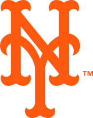 メッツNew York Mets | ナ東 | ニューヨーク | 1962年 | Citi Field | 2009 | 41,922 | 2 | 1986 | 74勝88敗 | ポートセントルーシー |
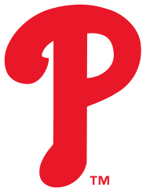 フィリーズPhiladelphia Phillies | ナ東 | フィラデルフィア | 1883年 | Citizens Bank Park | 2004 | 42,901 | 2 | 2008 | 88勝74敗 | クリアウォーター |
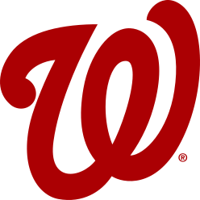 ナショナルズWashington Nationals | ナ東 | ワシントン | 1969年。モントリオール・エクスポズ→2005年ワシントン | Nationals Park | 2008 | 41,373 | 1 | 2019 | 77勝85敗 | ウェストパームビーチ |
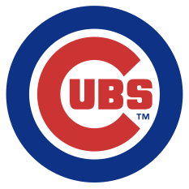 カブスChicago Cubs | ナ中 | シカゴ | 1876年。ナ・リーグ創設時からの球団 | Wrigley Field | 1914 | 41,649 | 3 | 2016 | 89勝73敗 | メサ |
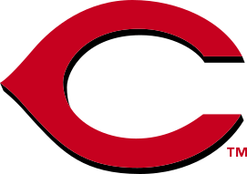 レッズCincinnati Reds | ナ中 | シンシナティ | 1882年 | Great American Ball Park | 2003 | 43,500 | 5 | 1990 | 75勝87敗 | グッドイヤー |
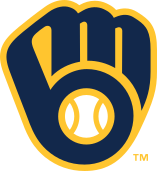 ブルワーズMilwaukee Brewers | ナ中 | ミルウォーキー | 1969年。シアトル・パイロッツ→1970年ミルウォーキー。1998年にア・リーグから移籍 | American Family Field | 2001 | 41,900 | 1 | 2026 | 103勝59敗 | フェニックス |
| パイレーツ Pittsburgh Pirates | ナ中 | ピッツバーグ | 1882年 | PNC Park | 2001 | 38,747 | 5 | 1979 | 82勝80敗 | ブラデントン |
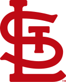 カージナルスSt. Louis Cardinals | ナ中 | セントルイス | 1882年 | Busch Stadium | 2006 | 44,383 | 11 | 2011 | 77勝85敗 | ジュピター |
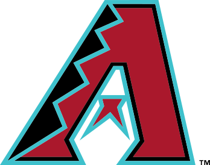 ダイヤモンドバックスArizona Diamondbacks | ナ西 | フェニックス | 1998年 | Chase Field | 1998 | 48,330 | 1 | 2001 | 86勝76敗 | スコッツデール |
| ロッキーズ Colorado Rockies | ナ西 | デンバー | 1993年 | Coors Field | 1995 | 46,897 | 0 | — | 58勝104敗 | スコッツデール |
| ドジャース Los Angeles Dodgers | ナ西 | ロサンゼルス | 1883年。ブルックリン→1958年ロサンゼルス | Dodger Stadium | 1962 | 56,000 | 9 | 2025 | 100勝62敗 | グレンデール |
| パドレス San Diego Padres | ナ西 | サンディエゴ | 1969年 | Petco Park | 2004 | 39,860 | 0 | — | 91勝71敗 | ピオリア |
| ジャイアンツ San Francisco Giants | ナ西 | サンフランシスコ | 1883年。ニューヨーク→1958年サンフランシスコ | Oracle Park | 2000 | 41,331 | 8 | 2014 | 65勝97敗 | スコッツデール |
球場・開場・収容人数は Wikipedia の現役球場一覧、WS 優勝は Wikipedia の優勝球団一覧（アストロズは2017年と2022年の2回に訂正）。成績と地区は MLB の2026年順位表、キャンプ地は MLB の2026年春季キャンプ発表による。565860
ブルワーズがレイズを4勝1敗で破り、球団史上初のワールドシリーズ優勝を果たした。ヤンキースは地区シリーズでレイズに3連敗した。12
ワールドシリーズ MVP は捕手ウィリアム・コントレラス（William Contreras）で、打率.381と盗塁阻止4を記録した。1
| リーグ | 東地区 | 中地区 | 西地区 |
|---|---|---|---|
| ア・リーグ | レイズ（98勝64敗） | ガーディアンズ（85勝77敗） | アストロズ（81勝81敗） |
| ナ・リーグ | ブレーブス（94勝68敗） | ブルワーズ（103勝59敗） | ドジャース（100勝62敗） |
MLB 2026年順位表。58
| 賞 | ア・リーグ | ナ・リーグ |
|---|---|---|
| MVP | ヨーダン・アルバレス Yordan Alvarez（アストロズ） | ピート・クロウ＝アームストロング Pete Crow-Armstrong（カブス） |
| サイ・ヤング賞 | キャム・シュリトラー Cam Schlittler（ヤンキース）。満票。防御率1.95 | ジェイコブ・ミジオロウスキー Jacob Misiorowski（ブルワーズ）。満票。防御率1.80 |
| 新人王 | ケビン・マクゴニグル Kevin McGonigle | サル・スチュワート Sal Stewart |
ミジオロウスキーは174回2/3で252奪三振、被打率.157を記録し、防御率1.80はMLB全体の1位だった。シュリトラーの防御率1.95はア・リーグ1位で、ERA+は215である。35459
ヤンキースは93勝68敗でア・リーグ東地区2位となり、ワイルドカードシリーズでレッドソックスに9－0と9－2で連勝した。地区シリーズではレイズに0－1、0－5、3－4で3連敗した。393試合27イニングで一度もリードを奪えなかった。ワールドシリーズ優勝は2009年が最後で、17年間優勝していない。2
春季キャンプはフロリダ州のグレープフルーツ・リーグ15球団と、アリゾナ州のカクタス・リーグ15球団に分かれる。ヤンキースのキャンプ地はタンパで、傘下のシングルAとルーキー級も同じ施設を使う。6084
地図: Esri（データは OpenStreetMap ほか）。位置は都市の中心。
| 都市 | 球団 |
|---|---|
| サラソタ | オリオールズ |
| フォートマイヤーズ | レッドソックス／ツインズ |
| タンパ | ヤンキース |
| ポートシャーロット | レイズ |
| ダニーデン | ブルージェイズ |
| レイクランド | タイガース |
| ウェストパームビーチ | アストロズ／ナショナルズ |
| ノースポート | ブレーブス |
| ジュピター | マーリンズ／カージナルス |
| ポートセントルーシー | メッツ |
| クリアウォーター | フィリーズ |
| ブラデントン | パイレーツ |
| 都市 | 球団 |
|---|---|
| グレンデール | ホワイトソックス／ドジャース |
| グッドイヤー | ガーディアンズ／レッズ |
| サプライズ | ロイヤルズ／レンジャーズ |
| メサ | アスレチックス／カブス |
| テンピ | エンゼルス |
| ピオリア | マリナーズ／パドレス |
| フェニックス | ブルワーズ |
| スコッツデール | ダイヤモンドバックス／ロッキーズ／ジャイアンツ |
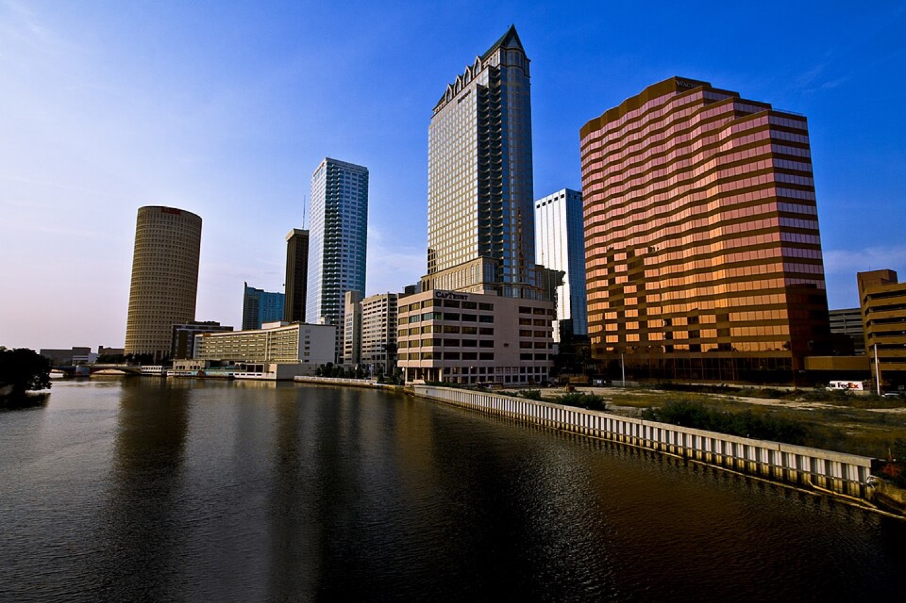
MLB の総収入は2024年に121億ドルで過去最高となった。球団間の格差はサラリーキャップではなく、ぜいたく税と収益分配で調整する。1217
NYU Stern の資料、CBS Sports（2024年は Forbes 報道の121億ドル）、Human Soar（2025年の推計）。推計方法により年ごとに差がある。111213
| 放送事業者 | 年額 | 区分 |
|---|---|---|
| FOX | 約7億2,900万ドル | 2028年まで継続 |
| ESPN | 約5億5,000万ドル | 新規 |
| TBS／Turner | 約4億7,000万ドル | 2028年まで継続 |
| NBC | 約2億ドル | 新規 |
| Netflix | 約5,000万ドル | 新規 |
| Apple TV+ | — | 継続 |
地方放送網（RSN）の Diamond Sports（Bally Sports）が経営破綻し、球団の地方放映収入と配信の安定性が低下した。MLB Local Media が一部球団の中継の制作と配信を引き受ける体制へ移行している。16
リーグ全体の収入は NFL が2025年に約210億ドルで、MLB は約118億〜125億ドル、NBA は約100億ドルの規模である。17
Forbes 2026年3月20日。7
1位のメッツ（3億4,520万ドル）と30位のガーディアンズ（7,280万ドル）の差は約4.7倍である。8
総年俸が基準額を超えた球団は、超過額に応じて税を払う。基準額は2025年に2億4,100万ドル、2026年に2億4,400万ドルである。税率は初年度20%・2年連続30%・3年以上50%で、上位の閾値には追加の税率がかかる。23
Sports Business Journal 2025年12月19日。24
マイナーの最低年俸は19,800ドルから35,800ドル、MLB の最低年俸は78万ドルで、MLB に上がると最低額が20倍以上になる。円換算は1ドル＝150円で計算する。359
マイナーの金額は2023年の初のマイナー労使協定の最低年額である。2026年の AAA は約36,590ドル（Front Office Sports）。MLB の平均年俸は AP の2026年開幕時の集計による。3521大谷翔平（Shohei Ohtani）は7億ドルのうち6億8,000万ドルを2034〜43年に後払いで受け取るため、ぜいたく税の計算上の年平均は約4,608万ドルとなる。26
| 順位 | 選手 | 総額 | 円換算 |
|---|---|---|---|
| 1 | フアン・ソト Juan Soto | 7億6,500万ドル | 約1,148億円 |
| 2 | 大谷翔平 Shohei Ohtani | 7億ドル | 1,050億円 |
| 3 | ブラディミール・ゲレーロJr. Vladimir Guerrero Jr. | 5億ドル | 750億円 |
| 4 | マイク・トラウト Mike Trout | 4億2,650万ドル | 約640億円 |
| 5 | ムーキー・ベッツ Mookie Betts | 3億6,500万ドル | 約548億円 |
| 6 | アーロン・ジャッジ Aaron Judge | 3億6,000万ドル | 540億円 |
| 7 | マニー・マチャド Manny Machado | 3億5,000万ドル | 525億円 |
| 8 | フランシスコ・リンドーア Francisco Lindor | 3億4,100万ドル | 約512億円 |
| 9 | ブライス・ハーパー Bryce Harper | 3億3,000万ドル | 495億円 |
| 10 | ゲリット・コール Gerrit Cole | 3億2,400万ドル | 486億円 |
Baseball-Reference の契約総額ランキングと AP。ジャッジ（9年3億6,000万ドル）とコール（9年3億2,400万ドル）はヤンキースの契約。252676
MLB の登録日数172日で1年のサービスタイムとなる。3年以上6年未満の選手は年俸調停の権利を持ち、6年でフリーエージェント（FA）となる。2年台の上位約22%は Super Two として調停の対象に加わる。22
MLB の試合に出る26人枠の外側に、選手を保護する40人枠がある。マイナー契約の選手は一定期間内に40人枠へ入らないと、ルール5ドラフトで他球団に指名される可能性がある。2728
| 規則 | 内容 |
|---|---|
| 26人枠 | MLB の試合に出場できる通常のアクティブ枠 |
| 40人枠 | MLB 契約の選手と一部のマイナー選手を含む保護枠 |
| オプション | 40人枠の選手をマイナーへ送る権利。通常3年分で、1年にマイナーへ送れる回数は原則5回まで |
| DFA（事実上の戦力外） | 40人枠から外す手続き。7日以内にトレード・ウェーバー・契約解除のいずれかを処理する |
| ルール5ドラフト | 19歳以上で契約した選手は、契約後4回目のルール5ドラフトまでに40人枠へ入れないと他球団に指名される可能性がある。指名した球団は翌シーズンその選手を26人枠に置く |
| IL | 負傷者リスト |
| ドラフト | 20巡。上位10巡のスロット価値の合計が球団のボーナスプールとなる。指名されなかった選手の契約金の上限は通常12万5千ドル |
| 国際アマチュア | 球団ごとの契約金プールの範囲で契約する。2026年のプールは544万〜803万4,900ドルで、ヤンキースは544万ドル（最低額） |
MLB 用語集（40人枠・ルール5）、MLB Rules、MLB の国際契約発表。2728293190
MLB の規則では、25歳未満で外国のプロ経験が6年未満の選手は国際アマチュアとなる。NPB に所属していない日本の大学生はこの条件に該当する。932そのため日本の大学生は、国際アマチュアの契約金プールの範囲で契約する。
ポスティングは NPB 球団に所属する選手の移籍制度であり、MLB 球団が旧所属球団へ譲渡金を払う点が国際アマチュア契約と異なる。32日本の社会人野球から直接契約した例には、田澤純一（レッドソックス）と吉川峻平（パナソニックからダイヤモンドバックス）がある。3334
2022〜26年の労使協定は2026年12月1日に失効し、2026年11月時点で交渉が続いている。MLB はサラリーキャップと下限額の導入を提案し、選手会は反対している。91920
現行の協定は2022年3月10日に成立した。主な内容は最低年俸の段階的な引き上げと、調停前の選手向けボーナスプール5,000万ドルである。ユニバーサルDH・ドラフト抽選・サービスタイム操作の対策・オプション回数の制限も導入した。189
| 年 | 2022 | 2023 | 2024 | 2025 | 2026 |
|---|---|---|---|---|---|
| MLB 最低年俸 | 70万ドル | 72万ドル | 74万ドル | 76万ドル | 78万ドル |
AP は2026年6月にロックアウトが予想されると報じた。新協定の内容によっては、国際アマチュアの契約解禁日（2027年1月15日）と2027年の球団別プール額が変わる可能性がある。国際ドラフトの導入も交渉の論点である。1910
マイナーリーグは2021年に160球団以上から120球団へ再編され、MLB が直接管理する体系となった。選手の待遇は2022年の和解と2023年の初の労使協定で改善した。963537
MLB とマイナーを結んでいた協定（PBA）は2020年9月30日に失効した。従来は MLB が最低160球団を保証していた。2021年から MLB 直轄の Professional Development League（PDL）へ移行し、各 MLB 球団が AAA・AA・ハイA・シングルAを1球団ずつ持つ120球団体制となった。ライセンスの期間は原則10年（2021〜30年）である。959697
体系から外れた球団の一部は、MLB パートナーリーグ（American Association・Atlantic League・Frontier League・Pioneer League）や2021年創設の MLB Draft League へ移った。98992021年に使った地域名のリーグ名（Triple-A East など）は、2022年に歴史的な名称へ戻った。100
| 階層 | リーグ | 1球団の試合数 | 年齢の中央値 |
|---|---|---|---|
| AAA | International／Pacific Coast | 150 | 27.0〜27.5歳 |
| AA | Eastern／Southern／Texas | 138 | 24.7〜25.0歳 |
| ハイA | Midwest／South Atlantic／Northwest | 132 | 23.1〜23.2歳 |
| シングルA | California／Carolina／Florida State | 132 | 21.7〜22.2歳 |
| ルーキー | FCL／ACL／DSL | FCL・ACL は約60 | — |
MiLB、Baseball America、Florida Pro Baseball。100101102103
ピッチクロック・牽制と離塁の制限・18インチのベース・守備シフトの制限はマイナーで先行して試験し、2023年に MLB へ導入した。104ABS（自動ボール・ストライク判定）は2019年に独立リーグの Atlantic League、2022年に Florida State League、2023〜25年に AAA などで試験した。2026年の MLB は全面的な自動判定ではなく、選手が球審の判定に異議を申し立てるチャレンジ方式を採用した。51
2022年以前のマイナー選手の年俸は1万ドル前後で、住宅をホストファミリーに頼る選手も多かった。37382022年に未払い賃金などの訴訟で MLB が1億8,500万ドルで和解し、同年にマイナー選手が MLBPA に加入した。2023年には初のマイナー労使協定（期間5年）が承認された。3537
| 階層 | 2023年協定以前 | 2023年協定の最低年額 | 円換算 |
|---|---|---|---|
| ルーキー（コンプレックス） | 4,800ドル | 19,800ドル | 297万円 |
| シングルA | — | 26,200ドル | 393万円 |
| ハイA | — | 27,300ドル | 約410万円 |
| AA | 13,800ドル | 30,250ドル | 約454万円 |
| AAA | 17,500ドル | 35,800ドル | 537万円 |
2026年の AAA の最低年額は約36,590ドルである（Front Office Sports）。春季キャンプとオフシーズンにも別建ての給与があり、対象の選手には住宅・1日2食・移動の保障が提供される。3536
2025年の120球団の観客数の合計は約3,036万人である。1052021年設立の Diamond Baseball Holdings（DBH）はマイナー球団の買収を続け、2024年には Syracuse Mets と Brooklyn Cyclones の買収を発表した。106
特徴のある球団名の例として、Rocket City Trash Pandas・Amarillo Sod Poodles・Richmond Flying Squirrels・Hartford Yard Goats・Jacksonville Jumbo Shrimp がある。100
各 MLB 球団は AAA・AA・ハイA・シングルAに1球団ずつ傘下を持つ。2027年から2球団が名称を変更する。1074
改名する2球団。ヤンキース傘下 AAA の Scranton/Wilkes-Barre RailRiders（2013〜2026年）は2027年から Scranton/Wilkes-Barre Highlanders となる。ヤンキースが1903〜1912年に使った名称で、プロ野球で最も長い球団名（32文字）である。カージナルス傘下 AA の Springfield Cardinals は2027年から Ozarks Springbirds となる（2026年10月6日発表）。4107
| 順位 | 選手 | 所属 | 守備 | 年齢 |
|---|---|---|---|---|
| 1 | ヘスス・マデ Jesús Made | ブルワーズ | SS | 19 |
| 2 | フランクリン・アリアス Franklin Arias | レッドソックス | SS | 20 |
| 3 | レオ・デブリース Leo De Vries | アスレチックス | SS/3B | 20 |
| 4 | ジョスエ・デパウラ Josue De Paula | ドジャース | OF | 21 |
| 5 | ケイド・アンダーソン Kade Anderson | マリナーズ | LHP | 22 |
| 6 | イーライ・ウィリッツ Eli Willits | ナショナルズ | SS | 18 |
| 7 | ジョスアル・ゴンザレス Josuar Gonzalez | ジャイアンツ | SS/2B | 19 |
| 8 | セバスチャン・ウォルコット Sebastian Walcott | レンジャーズ | SS/3B | 20 |
| 9 | セス・ヘルナンデス Seth Hernandez | パイレーツ | RHP | 20 |
| 10 | ライニエル・ロドリゲス Rainiel Rodriguez | カージナルス | C/1B | 19 |
MLB Pipeline 2026年10月2日の更新版。108109
ヤンキースはワールドシリーズ優勝27回で MLB 最多であり、Forbes の2026年評価額は85億ドルで30球団の1位である。2026年は93勝68敗で、地区シリーズで敗退した。64739
| 年 | 出来事 |
|---|---|
| 1901 | ア・リーグのボルチモア・オリオールズとして発足 |
| 1903 | フランク・ファレルとビル・デベリーが買収し、ニューヨークへ移転。ニューヨーク・ハイランダーズとなる |
| 1913 | ニューヨーク・ヤンキースへ改称 |
| 1920 | ベーブ・ルースをレッドソックスから獲得。移籍金12万5,000ドルとフェンウェイ・パークを担保とする融資35万ドル |
| 1923 | 旧ヤンキー・スタジアム開場（1974〜75年に改修、2008年閉場） |
| 1973 | ジョージ・スタインブレナーのグループが CBS から880万ドルで買収。現オーナーは息子のハル・スタインブレナー |
| 2002 | YES Network 開局。ヤンキースとマイナーの試合を中継する |
| 2009 | 現ヤンキー・スタジアム開場。27回目のワールドシリーズ優勝 |
MLB のヤンキース球団史、YES Network。6263676870
MLB ヤンキース球団史。64
ヤンキースの永久欠番は21の番号である（8番は2人で共有）。このほかに MLB 全球団共通の42番（ジャッキー・ロビンソン）がある。66
| 番号 | 選手・監督 |
|---|---|
| 1 | ビリー・マーチン |
| 2 | デレク・ジーター |
| 3 | ベーブ・ルース |
| 4 | ルー・ゲーリッグ |
| 5 | ジョー・ディマジオ |
| 6 | ジョー・トーリ |
| 7 | ミッキー・マントル |
| 8 | ヨギ・ベラ／ビル・ディッキー |
| 9 | ロジャー・マリス |
| 10 | フィル・リズート |
| 15 | サーマン・マンソン |
| 16 | ホワイティ・フォード |
| 20 | ホルヘ・ポサダ |
| 23 | ドン・マッティングリー |
| 32 | エルストン・ハワード |
| 37 | ケーシー・ステンゲル |
| 42 | マリアノ・リベラ（ジャッキー・ロビンソンの全球団欠番と同じ番号） |
| 44 | レジー・ジャクソン |
| 46 | アンディ・ペティット |
| 49 | ロン・ギドリー |
| 51 | バーニー・ウィリアムス |
現在のヤンキー・スタジアムは2009年に開場した。建設費は資料により約13億6,000万〜15億ドルである。収容人数は球場の公式案内で46,543人である（③の表は Wikipedia の一覧に基づく46,537人）。71725Forbes の2026年評価額は85億ドルで、2025年の推定収入は7億1,000万ドルである。69
監督はアーロン・ブーン（Aaron Boone）、GM はブライアン・キャッシュマン（Brian Cashman）である。7493勝68敗でア・リーグ東地区2位となり、ワイルドカードシリーズでレッドソックスを破った後、地区シリーズでレイズに3連敗した。73392
アーロン・ジャッジ（Aaron Judge）は66試合で18本塁打、41打点にとどまった。肋骨の疲労骨折で3か月以上離脱し、9月19日に右ふくらはぎの肉離れで負傷者リストに入った。ポストシーズンには出場していない。30本塁打に届かなかったのは2020年以来である。2
キャム・シュリトラーは満票でア・リーグのサイ・ヤング賞を受賞した。193回2/3で239奪三振、防御率1.95（ア・リーグ1位）、ERA+215を記録した。ヤンキースの投手の防御率としては1978年のロン・ギドリー（1.74）以来の低さである。388総年俸は推定約3億800万ドル、ぜいたく税の計算上の年俸は約3億3,400万ドルである。76
| 選手 | 在籍 | 主な記録 |
|---|---|---|
| 伊良部秀輝 | 1997〜99年 | 29勝20敗、防御率4.80 |
| 松井秀喜 | 2003〜09年 | 2009年ワールドシリーズ MVP |
| 井川慶 | 2007〜08年 | MLB で2勝4敗 |
| 黒田博樹 | 2012〜14年 | 先発投手として在籍 |
| イチロー | 2012〜14年 | 2012年途中に移籍。在籍中に日米通算4,000本安打 |
| 田中将大 | 2014〜20年 | 78勝46敗 |
| 前田健太 | 2025年8月 | マイナー契約を結ぶ |
MLB の記事とヤンキースの2015年メディアガイド。77787980
ヤンキースの傘下はドミニカ共和国のアカデミーからタンパ、ニューヨーク州とニュージャージー州、ペンシルベニア州を経てブロンクスへ上がる。投手育成はデータ分析を用いる pitching lab 型の方式をとる。8674
地図: Esri（データは OpenStreetMap ほか）。位置は球場の所在地。
球場は各球団と MLB の案内、成績は The Baseball Cube、愛称の由来は MLB の球場案内による。81828384858687
ヤンキースは投球データ・球種設計・球速・回転・リリースの分析を組み合わせる pitching lab 型の投手育成をとる。投手部門の責任者はサム・ブライエンド（Sam Briend）で、マット・ブレイク（Matt Blake）が投手育成と球種設計の中心となる。74近年の育成出身の投手にはルイス・ヒル／クラーク・シュミット／ウィル・ウォーレン／キャム・シュリトラーの4人がいる。2026年はウォーレンが156回で158奪三振、防御率3.92を記録した。88
| 順位 | 選手 | 区分 |
|---|---|---|
| 1 | ダックス・キルビー | 野手 |
| 2 | エルマー・ロドリゲス | 投手 |
| 3 | カルロス・ラグランジュ | 投手 |
| 4 | ハンター・ディーツ | 投手 |
| 5 | ベン・ヘス | 投手 |
MLB Pipeline 2026年11月12日更新。89
ヤンキースの2026年の国際アマチュア・ボーナスプールは544万ドルで、30球団の最低額だった。主な契約選手はドミニカ共和国の内野手ジオルマイオニ・ベルトレ（Geormayhoni Beltre、契約金10万ドル）とアブラハン・ピチャルド、ベネズエラの捕手ケネス・メレンデスなどである。9091
日本の大学生がヤンキースとマイナー契約を結ぶ場合、国際アマチュアの契約金プールの範囲で契約する。その後はタンパから各階層を順に上がる。本章は規則を当てはめた説明であり、昇格の時期は予想しない。910
19歳以上で契約した選手は、契約後4回目のルール5ドラフトまでに40人枠へ入れないと、他球団に指名される可能性がある。40人枠に入った選手を MLB とマイナーの間で移すにはオプションを使い、オプションは通常3年分である。2827
2026年12月1日に労使協定が失効する。2027年1月15日の国際契約の解禁日と2027年のヤンキースのプール額は、新しい協定の内容次第で変わり得る。910
調査メモ（mlb/*.out）と訂正メモ（mlb/corrections.md）に記載された URL を重複を除いて掲載する。確認日は2026年11月15日。
地図タイル: OpenStreetMap contributors。円換算は1ドル＝150円。